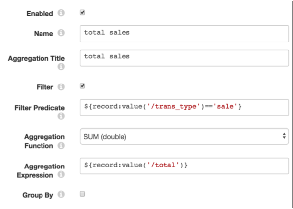

Aggregator
The Aggregator processor performs one or more aggregations within a window of time. The Aggregator processor displays the results in Monitor mode and can write the results to event records. The processor does not update records in the data stream.
You might use aggregation results with Data Collector data alerts to generate threshold notifications. Or, you might write the events to a data store and use a third-party dashboard application to visualize the data.
When you configure the Aggregator, you specify the window type and time window to use. This information determines how the processor displays data and generates events. You also specify the time zone to use and the aggregations to perform.
When you configure an aggregation, you specify the aggregation name and display title and the aggregation function to use. You can optionally define a filter expression to process a subset of the data, and a group by expression to aggregate based on groups.
To write the aggregation results to events, enable event generation and specify the type of event records to create. For general information about dataflow triggers and the event framework, see Dataflow Triggers Overview.
Window Type, Time Windows, and Information Display
The aggregation window type determines the window of time that the Aggregator processor uses to calculate aggregations. It also determines how the processor generates charts and events.
The time window is the period of time to use for the specified window type. Time window behavior is specific to the window type that you select.
For example, when you configure a rolling window type with a one hour time window, the processor performs aggregations every hour on the hour using the records that passed through the processor during each hour.
Conceptually, you might say that with a rolling window, records are static within the window where they occur. When records become part of a particular time window, they remain there. And once the calculations for a time window are complete, they remain static as well.
In contrast, when you select a one hour time window for a sliding window type, the aggregations are always based on the records that passed through the processor in the past hour, providing an update of the calculations at regular intervals.
Conceptually, the sliding window is locked into the current time, and records slide through the window. Records that have moved past the window are no longer part of sliding window calculations.
Rolling Windows
When using a rolling window, the Aggregator processor performs the aggregations on the set of records that pass through the processor within specific time windows. Use a rolling window to generate periodic historic analysis of the data passing through the pipeline.
With a rolling window, the time windows are incremented based on the hour, rather than on the start time of the pipeline.
For example, when you select a fifteen minute time window, the aggregations are calculated every fifteen minutes, starting on the hour. So if you start the pipeline at 8:09, the first aggregation occurs at 8:15, and the following aggregations at 8:30, 8:45, 9:00, and so on. In fact, if you start the pipeline anywhere between 8:01 and 8:14, the aggregations start at 8:15 and continue every 15 minutes.
For rolling windows, the processor creates the charts in Monitor mode based on the time window and the Number of Time Windows to Remember. For example, if you set the property to 4, and use a 15 minute time window, then the resulting charts display four 15 minute time windows.
The processor also creates events with the results of the calculations based on the time window. So with a 15 minute time window, it generates events every 15 minutes, based on the hour.
Note that the calculations from the first event can include less than a full time-window of records, for reasons described above. Similarly the last event, generated when the pipeline stops, can include calculations with less than a full time-window of records.
Sliding Windows
When using a sliding window type, the Aggregation processor performs the aggregations on the latest set of records within the specified time window. With a sliding window, the time window is always relative to the current time.
Rather than capturing the history of the calculations as with a rolling window, the sliding window provides updates to the current set of aggregations. Use a sliding window to provide real time information about the data passing through the processor.
For example, say you configure a sliding window with a 30 second time window. When you run the pipeline, the processor displays a single chart with information from the records that passed through the processor in the last 30 seconds. And it updates the single chart regularly.
In Monitor mode, the calculations and resulting charts are updated every few seconds for all time window intervals. The charts indicate the time that it was last updated.
When generating events, the processor generates events at regular intervals based on the specified time window, beginning as soon as the pipeline starts.
For example, for a sliding window type with a time window of one hour, the processor generates events every minute. So if you start the pipeline at 9:08, the processor generates events with the results of the calculations starting at 9:09, then 9:10, 9:11, etc.
Note that the results of the first hour of calculations contain less data than the specified one hour time window. At 10:08, the processor provides the results of the first one hour time window. At 10:09, the processor includes all of the latest records for the last hour in the calculations, dropping the records that had arrived between 9:08 and 9:09 since they have fallen out of the time window.
| Sliding Time Window | Event Generation Occurs... |
|---|---|
| 1 minute | Every 5 seconds from the start of the pipeline |
| 5 minutes | Every 5 seconds from the start of the pipeline |
| 10 minutes | Every 10 seconds from the start of the pipeline |
| 30 minute | Every 30 seconds from the start of the pipeline |
| 1 hour | Every 1 minute from the start of the pipeline |
| 6 hours | Every 5 minutes from the start of the pipeline |
| 12 hours | Every 10 minutes from the start of the pipeline |
| 24 hours | Every 20 minutes from the start of the pipeline |
Calculation Components
- Aggregate function and expression
- When you select the aggregate function to use, you typically also configure an aggregate expression. All aggregate functions except the COUNT function require an expression.
- For example, to determine the total sales for all transaction data in the
time window, you can set the aggregate function to SUM (double) and use the
following expression:
${record:value('/total')} - This expression performs a SUM of the total field for all records in the time window.
- Filter
- Configure a filter to limit the records used in calculations. A filter is an expression that evaluates to a boolean value. Records that evaluate to true are included in the aggregation.
- For example, the following filter ensures processing only credit card
transactions with a known credit card
type:
${record:value('/transaction_type')=="credit" AND record:value('/cc_type')!="unknown"}With this filter in place, the Aggregator excludes cash purchases and unknown credit card types. - Group by expression
- A group by expression is an expression used to group data before performing calculations. Use a group by expression to add an additional dimension to the results.
- The example above produces a single sum for all credit card transactions
where the credit card type is known. To break that number down by credit
card types, you can use the following group by
expression:
${record:value('/cc_type')} - This expression groups the data by the different values in the cc_type field, such as Visa or Mastercard, before performing the aggregation.
For additional examples and information on how the aggregation results display in Monitor mode, see Monitoring Aggregations.
Aggregate Functions
When you configure an aggregation, you select the aggregate function to use. When appropriate, you can select the data type to use for the results of the aggregation.
- Avg (Integer or Double)
- Count (Integer only)
- Min (Integer or Double)
- Max (Integer or Double)
- StdDev (Integer or Double)
- Sum (Integer or Double)
Event Generation
The Aggregator processor can generate events that contain the results of the aggregations. The processor can generate events that include the results of all aggregations. It can also generate events for the results of each individual aggregation.
- With a destination to store event information.
For an example, see Case Study: Event Storage.
- With a data
alert to send notifications.
You can configure data alerts on the event stream to notify upon reaching specified thresholds.
- With the Email executor to send a custom email
after receiving an event.
For an example, see Case Study: Sending Email.
Event Records
| Record Header Attribute | Description |
|---|---|
| sdc.event.type | Event type. Uses one of the following event types:
|
| sdc.event.version | An integer that indicates the version of the event record type. |
| sdc.event.creation_timestamp | Epoch timestamp when the stage created the event. |
The Aggregator processor can generate the following event records:
- Single aggregation event
- You can configure the Aggregator processor to create single aggregation events. Each event contains the results of a single aggregation. That is, when you configure the processor to generate single aggregation events, the processor produces a set of events each time the processor performs calculations. The frequency of event generation depends on the selected window type and time window.
- For example, if you have a processor configured with three aggregations with a rolling time window of ten minutes and you enable single aggregation events, the Aggregator processor generates three single aggregation events every ten minutes.
- The processor also generates the events when the pipeline stops, to provide the results of the final time window. This final event is most likely an incomplete time window which can produce unexpected aggregation results.
-
You can evaluate whether a time window is complete based on the difference between the time values for each event.
For example, say you expect the aggregations to occur every 30 seconds, and the times associated with the event records are: 1511295390, 1511295420, and 1511295440. You can assess that the last event was for a 20 second time window instead of a 30 second time window and probably occurred because the pipeline stopped.
- To generate single aggregation events, configure both of the following
properties:
- On the General tab, select Produce Events.
- On the Events tab, select Per Aggregator Events.
- Single aggregation events have the sdc.event.type set to SINGLE_AGGREGATOR_EVENT
and include the following fields:
Event Record Field Description name The name of the aggregation as defined in the stage. time The epoch time when the calculations took place and the event was generated. aggregatable A map field that contains the information used to perform the aggregation. When the aggregation does not include a group by expression, the map includes the following fields: - name - The name of the aggregation, as defined in the stage.
- type - The aggregation type, such as LongAvgAggregatable for the Avg (Integer) aggregate function.
- <aggregation-related fields> - Additional information based on the aggregate function used in the aggregation.
When the aggregation includes a group by expression, the aggregatable field lists each group. Each group field includes the fields described above.
- The following table describes the additional fields that can be included in
event records based on the aggregate function used in the aggregation:
Aggregate Function Additional Fields Average - count
- total
Count - count
Max - max
Min - min
Stddev - total
- count
- totalSquare
Sum - sum
- count
- All aggregation event
- You can configure the Aggregator processor to create an all aggregation event that includes the results of all configured aggregations. The frequency of event generation depends on the selected window type and time window.
- Single aggregation events have the sdc.event.type set to ALL_AGGREGATOR_EVENT and includes a list of aggregations. Each aggregation list item is a map field that includes the same fields as the single aggregation event, described above.
- To generate an all aggregation event, configure both of the following
properties:
- On the General tab, select Produce Events.
- On the Events tab, select All Aggregators Events.
Monitoring Aggregations
In addition to standard stage statistics, the Aggregator processor provides aggregation charts that you can monitor when you run the pipeline. The processor generates one chart for every aggregation, using the specified title for the chart name.
The contents and display of the charts depend on the aggregation and stage properties. For example, when using a group by expression, the chart displays a bar for each group.
When using a sliding window, charts display the date and time that the chart was last updated.
When using a rolling window, charts contain the results for multiple time windows based on the Number of Time Windows to Remember property. Charts display the date and time that the time window closes. The most recent time window can be in progress, displaying the latest details as the processor continues to aggregate data within the time window.
For example, say you have an Aggregator processor using a rolling window and a 30 second time window. It is configured to remember three time windows and uses the following aggregation to perform a sum of all sales, using a filter to exclude returns:

The processor generates the following "total sales" chart:

Notice, the aggregate function, SUM (double), displays on the left side of the chart and the end of each time window displays under each bar. You can see that the interval between the time windows is 30 seconds, as configured in the stage.
The results for the third time window seem low, but this is because the time window is still active -- the calculations are ongoing and the results are updated until the time window closes. Like other Data Collector charts and graphs, when you hover over a particular section, relevant details display. In this case, the "value" is the sum of the sales that occurred in the time window.
In the same Aggregator processor, you might use the following aggregation configuration to determine the count of sales and returns. The group by expression enables counting each transaction type:

In the resulting "transaction types" chart, the COUNT function displays on the left, and separate bars represent the return and sale groups:

To view Aggregator charts and statistics, view the pipeline in Monitor mode, and then select the Aggregator processor.
Configuring an Aggregator
Configure an Aggregator processor to perform aggregations within a time window.
-
In the Properties panel, on the General tab, configure the
following properties:
General Property Description Name Stage name. Description Optional description. Produce Events 
Generates event records when events occur. Use for event handling. 
Required Fields Fields that must include data for the record to be passed into the stage. Tip: You might include fields that the stage uses.Records that do not include all required fields are processed based on the error handling configured for the pipeline.
Preconditions Conditions that must evaluate to TRUE to allow a record to enter the stage for processing. Click Add to create additional preconditions. Records that do not meet all preconditions are processed based on the error handling configured for the stage.
On Record Error Error record handling for the stage: - Discard - Discards the record.
- Send to Error - Sends the record to the pipeline for error handling.
- Stop Pipeline - Stops the pipeline. Not valid for cluster pipelines.
-
On the Aggregations tab, configure the following
properties:
Aggregation Property Description Window Type Window type to use: - Rolling - Calculates aggregations at regular intervals based on the hour.
- Sliding - Calculates aggregations based on the latest interval of data.
Time Window Time window of records to include in the aggregations. For rolling windows, the time window also determines when the processor updates charts in Monitor mode and when the processor generates events.
For sliding windows, the time window determines only the time window of records to include in aggregations. Charts and events are generated separately.
Time Zone Time zone to use to establish time windows. Number of Time Windows to Remember The number of time windows to display in Monitor mode. Used only with rolling windows. Aggregations Aggregate calculations to perform. To configure additional aggregations, click the Add icon. Enabled Enables the aggregation. Clear this option to disable the aggregation while retaining it for future use. Name Aggregation name. Specify a name for the aggregation that is unique within the processor. Aggregation Title Aggregation title. The title used for the chart generated for the aggregation. Filter Enables creating a filter expression. Filter Predicate Filter condition to reduce the number of records included in the calculation. Enter a boolean expression. Records that evaluate to Yes are included in the aggregation.
Aggregation Function The aggregate function to use. You can use the following aggregate functions:- Avg (Integer or Double)
- Count (Integer only)
- Min (Integer or Double)
- Max (Integer or Double)
- StdDev (Integer or Double)
- Sum (Integer or Double)
Aggregation Expression Expression for the selected aggregate function. Group By Enables using a group by expression in calculations. Group By Expression Expression for grouping records before performing the calculations.